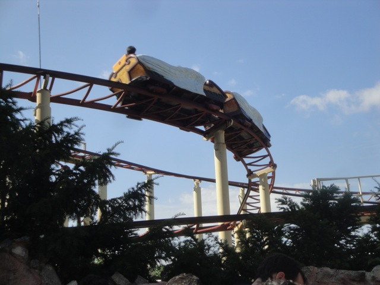

| |
Vol D'Icare Review

We're here at Parc Asterix to review Vol D'Icare. The park's family coaster and in all honesty, just a bland, forgettable, and worthless coaster. So let's not waste any more time and just get this review over with. We get in the seats, which have inline seating. Don't mistake this ride for a Bobsled. This park has a real bobsled that's actually a really fun ride. This coaster is just a bland snore. We pull down the lap bar, and away we go. We turn out of the statation and start to climb the lifthill. We reach the top, and pass right by a giant sun. Apparently, this is supposed to mimick the flight of Icarus. Cause, apparently the line (I WAITED WAY TOO LONG FOR THIS RIDE!!!) is themed to this extravagent labyrinth. I sort of got it, but I was too annoyed to really appreciate the theming. And yeah. That's what the sun is for. All I know is that I saw the apathetic look on the sun's face, and felt exactly that way about this ride. Moving on. We then head down this sort of curved drop. That leads us into this sort of curved hill, and then leads us into this big turnaround, that actually requires a little mini-lifthill to get up to the top. Whatever. We then head down through a downward helix and around this slight hill/curve. We then head around this banked turnaround only to head into another midcourse brake. The only thing interesting about this is that the midcourse brakes are also banked. That's certainly...interesting. We then head around an S Curve, meander around a bit, and then head straight into another midcourse brake. Good god, it's like ride has no idea what it wants to do, so it's just pacing back and forth, waiting for a purpose. This midcourse acts far more like a final brakes as the next section after this is just the ride romaing around at very slow speeds, with just a couple drops that are very small, before heading into another midcourse brake, that leads to one final dip, and that's the final brake run. I completely forgot about this ride until it came time to write this review, so as you can see, this ride left no impact on me whatsoever. It's just a bland family coaster. If there's no line, there's no harm in riding it as it's a harmless ride. Just don't be afraid to skip this ride if the line is way too long (Knowing Parc Asterix, it could very well end up that way).
5/10
Location: Parc Asterix
Opened: 1994
Built by: Zeirer
Last Ridden: June 30, 2012
Vol D'Icare Photos
Home
|